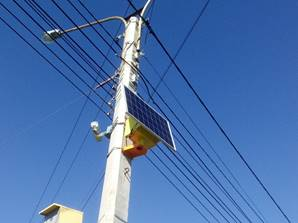
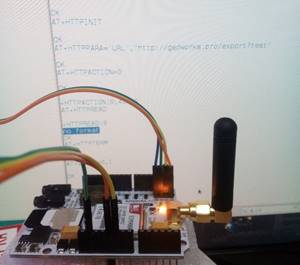

«Солнечный компьютер» - универсальное миниатюрное вычислительное устройство. Компьютер специально сконструирован для работы в тех условиях, где нет возможности подвести электропитание и нет надежных сетей коммуникации. Он обладает широким спектром интерфейсов, позволяющих подключать к компьютеру различные периферийные устройства и датчики.
Основной источник питания – солнечная батарея, входящая в комплект комплекса. Она способна питать комплекс в течении всего календарного года в условиях средней полосы России при условии, что компьютер самостоятельно управляет режимом своей работы. Интеллектуальная составляющая компьютера позволяет ему оптимально подстраиваться под имеющиеся условия работы, наиболее эффективно используя энергетические и вычислительные ресурсы.
Основное общение с «Солнечным компьютером» проходит через веб-интерфейс специального сервиса. Компьютер оборудован несколькими средствами удаленной беспроводной связи, что исключает потерю управления устройством. Формирование заданий, контроль исполнения, сбор данных, мониторинг состояния компьютера – эти функции доступны с любого устройства в т.ч. и мобильного устройства.
Даже если с компьютером нет связи, он все равно работает. Он сообщит о проделанной работе и пришлет данные, сразу как восстановит связь.
1. Управление питанием.
Устройство определяет, питается ли оно от постоянного
источника тока, либо от расходуемого источника энергии (солнечная панель, АКБ и
т.д.)
Во втором случае устройство работает в режиме
энергосбережения, стараясь минимизировать работу и сохранить заряд (а по
возможности и накопить его)
2. Удаленное выполнение полезных функций.
Устройство имеет ряд полезных модулей, такие как камера
фото- и видеонаблюдения, модем, датчики температуры, шума, давления,
газоанализаторы и проч. Набор модулей
может меняться.
Устройство управляет этими модулями самостоятельно по
необходимости (для расчета жизненного цикла) и так же принимает управляющие
сигналы извне для запуска процедур и организации работы модулей.
Управляющие сигналы составляют наборы специализированных
команд, и идентифицируются по серверу, с которого получены и по пользователю,
сформировавшему набор.
3. Режимы выполнения команд.
Существуют 2 варианта выполнения команд: обязательные к исполнению и необязательные. В первом случае команды выполняются незамедлительно, в том режиме, с той последовательности и с теми параметрами, которые задал пользователь. Во втором режиме устройство само определяет возможность выполнения и корректирует параметры исходя из своих возможностей: в зависимости от имеющегося типа питания и остаточного заряда.
4. Сетевое взаимодействие.
Два и более устройства могут объединяться в сеть для обмена данными, выполнения заданий, организации уровней подчиненности. Устройства могут объединяться как в одноранговые сети, так и в сети по принципу клиент-сервер.
Устройство является микрокомпьютером широкого спектра применения.
| Функциональность устройства | Необходимая комплектация |
| Проведение вычислительных операций посредством удаленной постановки задач | Модуль беспроводной связи |
| Фото- и видеофиксация | Модуль видеокамеры |
| Детектирование движения, обнаружение и распознавание объектов в кадре | Модуль видеокамеры |
| Метеостанция | Погодные датчики (температура, влажность, давление и пр.) |
| Охранное устройство с функцией удаленного оповещения | Датчик движения, тепловые датчики, модуль видеокамеры |
| Детектор превышения ПДК вредных веществ с функцией удаленного оповещения | Датчики газоанализаторов |
| Детектор возгорания с функцией удаленного оповещения | Датчик задымленности, температурный датчик, видеокамера |
| Детектор подтопления с функцией удаленного оповещения | Датчик уровня жидкости |
| Система экстренного оповещения населения | Требуется рупорный динамик |
| Наименование параметра | Значение |
| Габариты компьютера, мм | 350 х 120 х 110 |
| Вес компьютера без защитного кожуха, кг | 0,2 |
| Вес компьютера с защитным кожухом, кг | 1,5 |
| Входное напряжение, В | 12 |
| Потребляемая мощность в режиме работы, Вт | 7 |
| Потребляемая мощность в режиме сна, Вт | 1 |
| Разрешение камеры, Мпикс | 8 |
| Макс. разрешение фотоснимков | 3280 х 2464 |
| Режимы записи видео, разрешение / макс. частота кадров в сек. | 1920 х 1080 / 30 1280 х720 / 60 640 х 480 / 90 |